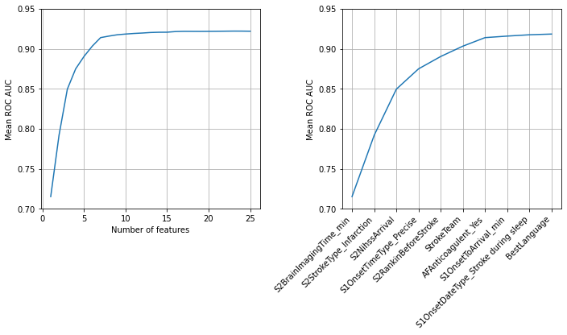

XGBoost feature selection
Contents
XGBoost feature selection¶
Aims¶
Select up to 25 features using forward feature selection. Features are selected sequentially, choosing the feature that leads to most improvement in ROC AUC score.
Import libraries¶
# Turn warnings off to keep notebook tidy
import warnings
warnings.filterwarnings("ignore")
import os
import matplotlib.pyplot as plt
import numpy as np
import pandas as pd
from xgboost import XGBClassifier
from sklearn.metrics import auc
from sklearn.metrics import roc_curve
Create output folder if needed¶
path = './output'
if not os.path.exists(path):
os.makedirs(path)
Import data¶
Data has previously been split into 5 stratified k-fold splits.
data_loc = '../data/kfold_5fold/'
train_data, test_data = [], []
for i in range(5):
train_data.append(pd.read_csv(data_loc + 'train_{0}.csv'.format(i)))
test_data.append(pd.read_csv(data_loc + 'test_{0}.csv'.format(i)))
Get list of features¶
features = list(train_data[0])
Fit model (k-fold)¶
# Create list to store accuracies and chosen features
roc_auc_by_feature_number = []
roc_auc_k_fold_by_feature_number = []
chosen_features = []
# Initialise chosen features list and run tracker
available_features = list(train_data[0].drop('S2Thrombolysis', axis=1))
number_of_features = len(available_features)
# Loop through number of features
for i in range (25):
# Reset best feature and accuracy
best_result = 0
best_feature = ''
# Loop through available features
for feature in available_features:
# Create copy of already chosen features to avoid original being changed
features_to_use = chosen_features.copy()
# Create a list of features from features already chosen + 1 new feature
features_to_use.append(feature)
# Set up lists to hold AUC results for each selected feature under test
test_auc_results = []
# Loop through k folds
for k_fold in range(5):
# Get k fold split
train = train_data[k_fold]
test = test_data[k_fold]
# Get X and y
X_train = train.drop('S2Thrombolysis', axis=1)
X_test = test.drop('S2Thrombolysis', axis=1)
y_train = train['S2Thrombolysis']
y_test = test['S2Thrombolysis']
# Restrict features
X_train = X_train[features_to_use]
X_test = X_test[features_to_use]
# One hot encode hospitals if hospital in features used
if 'StrokeTeam' in features_to_use:
X_train_hosp = pd.get_dummies(
X_train['StrokeTeam'], prefix = 'team')
X_train = pd.concat([X_train, X_train_hosp], axis=1)
X_train.drop('StrokeTeam', axis=1, inplace=True)
X_test_hosp = pd.get_dummies(
X_test['StrokeTeam'], prefix = 'team')
X_test = pd.concat([X_test, X_test_hosp], axis=1)
X_test.drop('StrokeTeam', axis=1, inplace=True)
# Define model
model = XGBClassifier(verbosity = 0, seed=42, learning_rate=0.5)
# Fit model
model.fit(X_train, y_train)
# Get predicted probabilities
y_probs = model.predict_proba(X_test)[:,1]
# Get ROC AUC
fpr, tpr, thresholds = roc_curve(y_test, y_probs)
roc_auc = auc(fpr, tpr)
test_auc_results.append(roc_auc)
# Get average result from all k-fold splits
feature_auc = np.mean(test_auc_results)
# Update chosen feature and result if this feature is a new best
if feature_auc > best_result:
best_result = feature_auc
best_result_k_fold = test_auc_results
best_feature = feature
# k-fold splits are complete
# Add mean accuracy and AUC to record of accuracy by feature number
roc_auc_by_feature_number.append(best_result)
roc_auc_k_fold_by_feature_number.append(best_result_k_fold)
chosen_features.append(best_feature)
available_features.remove(best_feature)
print (f'Feature {i+1:2.0f}: {best_feature}, AUC: {best_result:0.3f}')
Feature 1: S2BrainImagingTime_min, AUC: 0.715
Feature 2: S2StrokeType_Infarction, AUC: 0.792
Feature 3: S2NihssArrival, AUC: 0.850
Feature 4: S1OnsetTimeType_Precise, AUC: 0.875
Feature 5: S2RankinBeforeStroke, AUC: 0.890
Feature 6: StrokeTeam, AUC: 0.903
Feature 7: AFAnticoagulent_Yes, AUC: 0.914
Feature 8: S1OnsetToArrival_min, AUC: 0.916
Feature 9: S1OnsetDateType_Stroke during sleep, AUC: 0.917
Feature 10: BestLanguage, AUC: 0.918
Feature 11: MoreEqual80y_Yes, AUC: 0.919
Feature 12: LocQuestions, AUC: 0.920
Feature 13: StrokeTIA_Yes, AUC: 0.920
Feature 14: LimbAtaxia, AUC: 0.921
Feature 15: Loc, AUC: 0.921
Feature 16: S2NewAFDiagnosis_No, AUC: 0.921
Feature 17: S1AdmissionHour_18:00 to 20:59, AUC: 0.922
Feature 18: S1Ethnicity_Mixed, AUC: 0.922
Feature 19: AFAnticoagulentHeparin_No, AUC: 0.922
Feature 20: Sensory, AUC: 0.922
Feature 21: FacialPalsy, AUC: 0.922
Feature 22: ExtinctionInattention, AUC: 0.922
Feature 23: AFAnticoagulentHeparin_Yes, AUC: 0.922
Feature 24: S2TIAInLastMonth_Yes, AUC: 0.922
Feature 25: AFAntiplatelet_No but, AUC: 0.922
results = pd.DataFrame()
results['number_features'] = range(1, len(chosen_features)+1)
results['feature'] = chosen_features
results['AUC'] = roc_auc_by_feature_number
results['AUC_Std'] = [np.std(auc) for auc in roc_auc_k_fold_by_feature_number]
results
| number_features | feature | AUC | AUC_Std | |
|---|---|---|---|---|
| 0 | 1 | S2BrainImagingTime_min | 0.715332 | 0.003247 |
| 1 | 2 | S2StrokeType_Infarction | 0.791939 | 0.003900 |
| 2 | 3 | S2NihssArrival | 0.849530 | 0.002800 |
| 3 | 4 | S1OnsetTimeType_Precise | 0.874870 | 0.002517 |
| 4 | 5 | S2RankinBeforeStroke | 0.890313 | 0.002097 |
| 5 | 6 | StrokeTeam | 0.903222 | 0.002272 |
| 6 | 7 | AFAnticoagulent_Yes | 0.913876 | 0.001896 |
| 7 | 8 | S1OnsetToArrival_min | 0.915791 | 0.002128 |
| 8 | 9 | S1OnsetDateType_Stroke during sleep | 0.917436 | 0.002507 |
| 9 | 10 | BestLanguage | 0.918334 | 0.002303 |
| 10 | 11 | MoreEqual80y_Yes | 0.919070 | 0.002541 |
| 11 | 12 | LocQuestions | 0.919606 | 0.002315 |
| 12 | 13 | StrokeTIA_Yes | 0.920283 | 0.002848 |
| 13 | 14 | LimbAtaxia | 0.920590 | 0.002754 |
| 14 | 15 | Loc | 0.920646 | 0.002748 |
| 15 | 16 | S2NewAFDiagnosis_No | 0.921448 | 0.002273 |
| 16 | 17 | S1AdmissionHour_18:00 to 20:59 | 0.921730 | 0.002421 |
| 17 | 18 | S1Ethnicity_Mixed | 0.921684 | 0.002376 |
| 18 | 19 | AFAnticoagulentHeparin_No | 0.921648 | 0.002382 |
| 19 | 20 | Sensory | 0.921704 | 0.001978 |
| 20 | 21 | FacialPalsy | 0.921784 | 0.001948 |
| 21 | 22 | ExtinctionInattention | 0.921923 | 0.002732 |
| 22 | 23 | AFAnticoagulentHeparin_Yes | 0.922031 | 0.002661 |
| 23 | 24 | S2TIAInLastMonth_Yes | 0.922001 | 0.002801 |
| 24 | 25 | AFAntiplatelet_No but | 0.921872 | 0.002320 |
features_to_show = 10
fig = plt.figure(figsize=(10,6))
ax1 = fig.add_subplot(121)
ax1.plot(results['number_features'], results['AUC'])
ax1.set_xlabel('Number of features')
ax1.set_ylabel('Mean ROC AUC')
ax1.set_ylim(0.7, 0.95)
ax1.grid()
ax2 = fig.add_subplot(122)
ax2.plot(results['feature'][:features_to_show],
results['AUC'][:features_to_show])
xlabels = list(results['feature'])
xlabels = xlabels[:features_to_show]
ax2.set_xticklabels(xlabels, rotation=45, ha='right')
ax2.set_ylabel('Mean ROC AUC')
ax2.set_ylim(0.7, 0.95)
ax2.grid()
plt.tight_layout(pad=1.5)
plt.savefig(f'./output/feature_selection.jpg', dpi=300)
plt.show()

results.to_csv('./output/feature_selection.csv', index=False)
Observations¶
8 features are able to provide a ROC AUC of 0.915 out of a maximum of 0.922. These features are also independent of each other, and are:
S2BrainImagingTime_min
S2StrokeType_Infarction
S2NihssArrival
S1OnsetTimeType_Precise
S2RankinBeforeStroke
StrokeTeam
AFAnticoagulent_Yes
S1OnsetToArrival_min